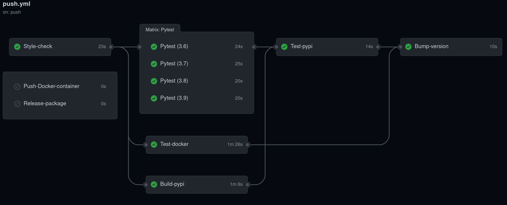

Repository files
Contents
mloq offers a set of features focused on generating automatically all the required
files to start your Machine Learning project.
Repository files#
Set up the following common repository files personalized for your project with the values
defined in mloq.yml:
README.md
DCO.md
CONTRIBUTING.md
CODE_OF_CONDUCT.md
LICENSE
.gitignore
Packaging#
Automatic configuration of pyproject.toml and setup.py to distribute your project as a Python package.
Code style#
All the necessary configuration for the following tools is defined in pyproject.toml.
Requirements#
mloq creates three different requirements files in the root directory of the project. Each file contains pinned dependencies.
requirements-lint.txt: Contains the dependencies for running style check analysis and automatic formatting of the code.
requirements-test.txt:
Dependencies for running pytest, hypothesis, and test coverage.
requirements.txt: Contains different pre-configured dependencies that can be defined inmloq.yml. The available pre-configured dependencies are:data-science: Dependencies of common data science libraries.
data-visualization: Common visualization libraries.
Last version of pytorch and tensorflow
Docker#
A Dockerfile that builds a container on top of the FragileTech Docker Hub images:
If tensorflow or pytorch are selected as requirements, the container has CUDA 11.0 installed.
Installs all the packages listed in
requirements.txt.Installs
requirements-test.txtandrequirements-lint.txtdependencies.Install a
jupyter notebookserver with a configurable password on port 8080.Installs the project with
pip install -e ..
Continuous integration using GitHub Actions#
Set up automatically a continuous integration (CI) pipeline using GitHub actions with the following jobs: 
Automatic build and tests:
Style Check: Run
flake8andblack --checkto ensure a consistent code style.Pytest: Test the project using pytest on all supported Python versions and output a code coverage report.
Test-docker: Build the project’s Docker container and run the tests inside it.
Build-pypi: Build the project and upload it to Test Pypi with a version tag unique to each commit.
Test-pypi: Install the project from Test Pypi and run the tests using pytest.
Bump-version: Automatically bump the project version and create a tag in the repository every time the default branch is updated.
Deploy each new version:
Push-docker-container: Upload the project’s Docker container to Docker Hub.
Release-package: Upload to Pypi the source of the project and the corresponding wheels.
Testing#
The last versions of pytest, hypothesis, and pytest-cov can be found in requirements-test.txt.
The folder structure for the library and tests is created.
Project Makefile#
A Makefile will be created in the root directory of the project. It contains the following commands:
make style: Runisortandblackto automatically arrange the imports and format the project.make check: Runflakehelland check black style. If it raises any error the CI will fail.make test: Clear the tests cache and run pytest.make pipenv-install: Install the project in a new Pipenv environment and create a newPipfileandPipfile.lock.make pipenv-test: Run pytest inside the project’s Pipenv.make docker-build: Build the project’s Docker container.make docker-test: Run pytest inside the projects docker container.make docker-shell: Mount the current project as a docker volume and open a terminal in the project’s container.make docker-notebook: Mount the current project as a docker volume and open a jupyter notebook in the project’s container. It exposes the notebook server on the port8080.